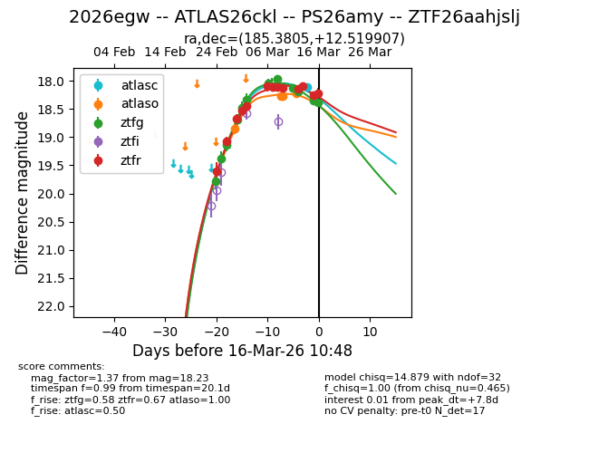
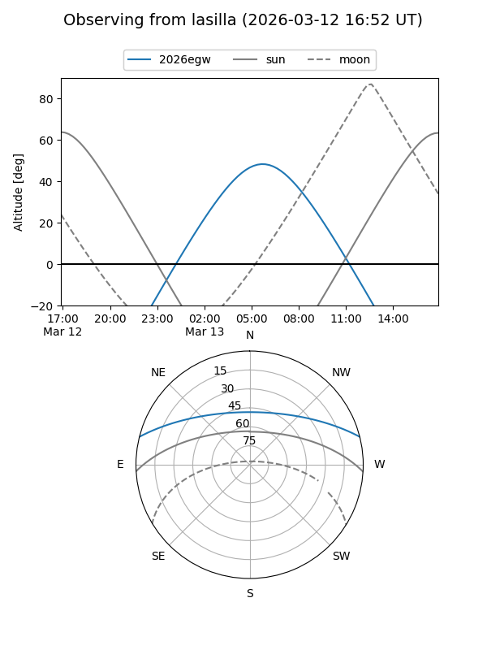
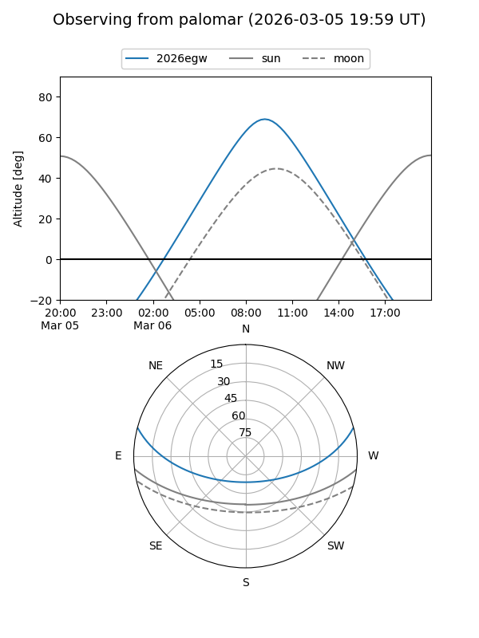
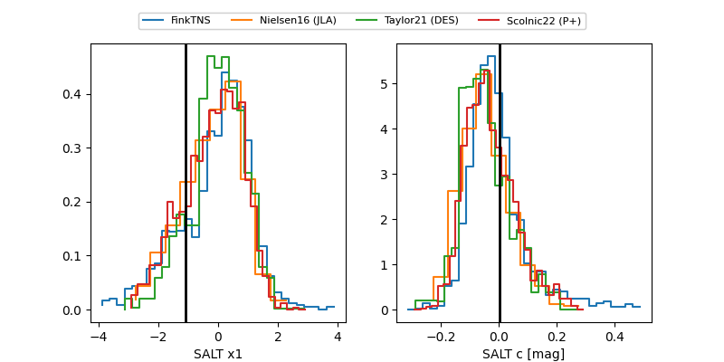

2026egw
Target 2026egw at 2026-03-16 10:50
Aliases and brokers:
FINK: link
Lasair: link
ALeRCE: link
TNS: link
YSE: link
alt names
ZTF26aahjslj (ztf,fink_ztf)
2026egw (tns,yse)
ATLAS26ckl (atlas)
PS26amy (panstarrs)
Coordinates:
equatorial (ra, dec) = 185.3805,+12.51991
equatorial (HMS+DMS) = 12:21:31.31,+12:31:11.67
galactic (l, b) = (275.8423,+73.79739)
Flags:
Photometry:
last atlasc=18.11, atlaso=18.22, ztfg=18.39, ztfr=18.23
1 atlasc, 4 atlaso, 13 ztfg, 13 ztfr detections
Lightcurve

Visibility


Additional plots
